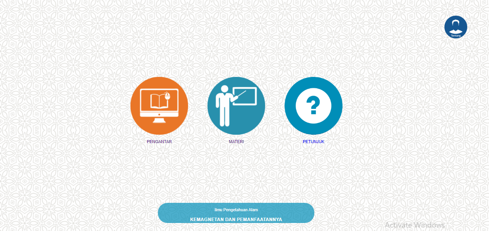
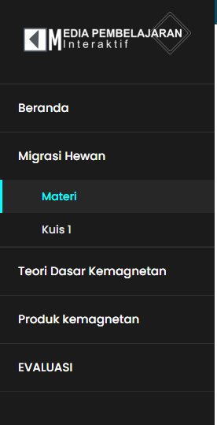
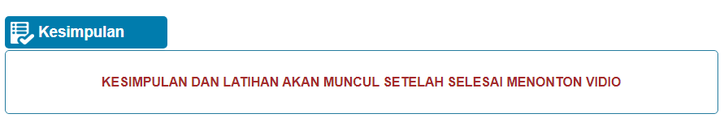
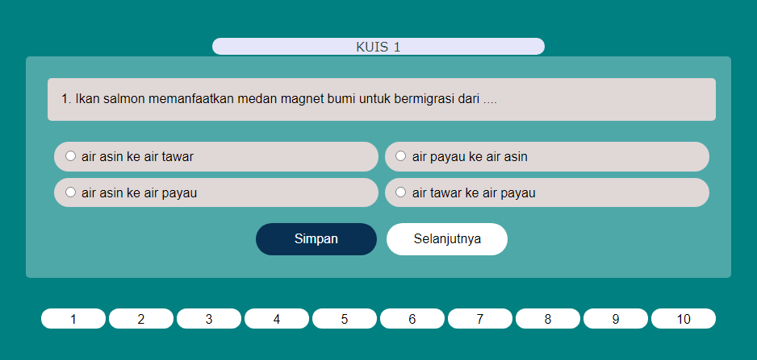

Media Pembelajaran ini dibuat Untuk Memenuhi Persyaratan dalam Menyelesaikan
Program Strata-1 Pendidikan Ilmu Komputer dengan judul:
Pengembangan Media Pembelajaran Interaktif Berbasis Web Pada Materi Energi
Dalam Sistem Kehidupan Di Kelas VII Dengan Metode Demonstrasi
Peneliti : Rahmat Faisal
NIM : 1610131210016
Program Studi : S1 Pendidikan Komputer
Pembimbing 1 : Dr. R. Ati Sukmawati, M.Kom.
Pembimbing 2 : Dr. Andi Ichsan Mahardika, M.Pd.
Petunjuk Aplikasi

Halaman Utama
Halaman utama berisi empat pilihan tombol yang akan mengarahkan anda kehalaman pengantar,
halaman materi, halaman petunjuk dan halaman tentang pengguna.

Navigasi Sub Materi
Pada halaman materi anda akan menemukan navigasi yang dapat digunakan untuk mengakses sub-sub materi.

Navigasi halaman
Navigasi halaman berfungsi untuk mengakses halaman-halaman yang terdapat pada sub bab materi.

Navigasi Video
Dalam video demonstrasi terdapat tombol navigasi yang dapat digunakan untuk
membuka bagian-bagian video.

Latihan/kesimpulan
Latihan dan kesimpulan akan muncul setelah video diputar sampai selesai.

Kuis/Evaluasi
Pada halaman kuis atau evaluasi terdapat soal dan pilihan jawaban dan tombol simpan
untuk meyimpan jawaban dan ada navigasi tombol soal.